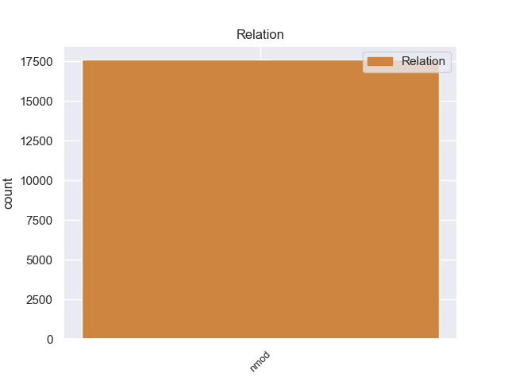
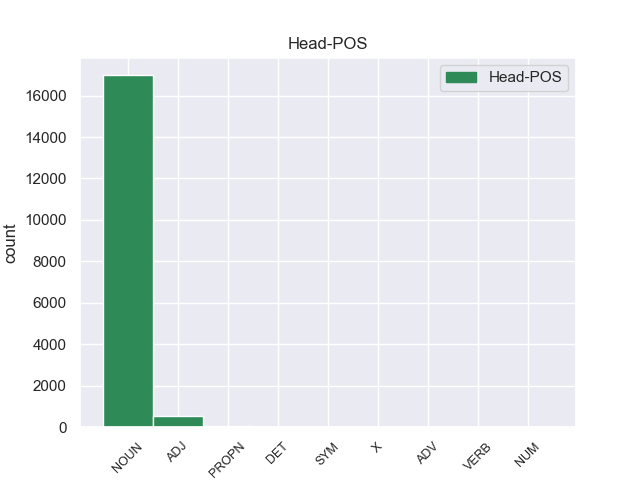
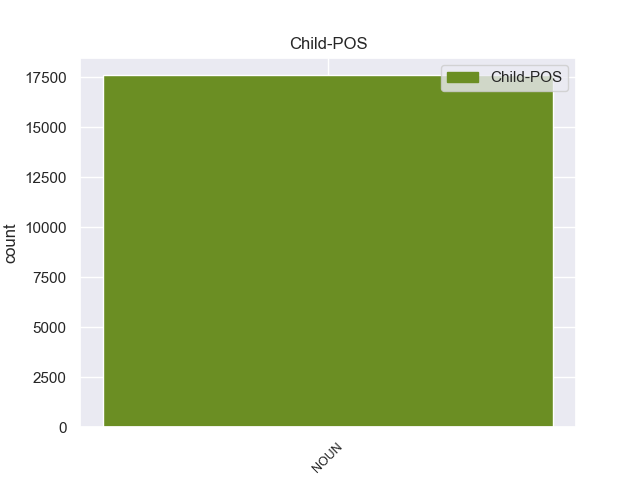

Distribution of features within this leaf



Agreement Rules sorted by frequency.
- When the dependent token is the nominal modifier(nmod) of the head token, and the head token is NOUN and the dependent token is NOUN.
1 Esta _ _ _ _ 0 _ _ _
2 teoría _ _ _ _ 0 _ _ _
3 se _ _ _ _ 0 _ _ _
4 avenía _ _ _ _ 0 _ _ _
5 bien _ _ _ _ 0 _ _ _
6 con _ _ _ _ 0 _ _ _
7 la _ _ _ _ 0 _ _ _
8 creencia _ _ _ _ 0 _ _ _
9 de _ _ _ _ 0 _ _ _
10 el _ _ _ _ 0 _ _ _
11 Romanticismo _ _ _ _ 0 _ _ _
12 en _ _ _ _ 0 _ _ _
13 un _ _ _ _ 0 _ _ _
14 volkgeist _ _ _ _ 0 _ _ _
15 , _ _ _ _ 0 _ _ _
16 " _ _ _ _ 0 _ _ _
17 genio _ _ _ _ 0 _ _ _
18 o _ _ _ _ 0 _ _ _
19 espíritu espíritu NOUN _ Gender=Masc|Number=Sing 0 _ _ _
20 de _ _ _ _ 0 _ _ _
21 el _ _ _ _ 0 _ _ _
22 pueblo pueblo NOUN _ Gender=Masc|Number=Sing 19 nmod _ _
23 " _ _ _ _ 0 _ _ _
24 , _ _ _ _ 0 _ _ _
25 autor _ _ _ _ 0 _ _ _
26 colectivo _ _ _ _ 0 _ _ _
27 y _ _ _ _ 0 _ _ _
28 anónimo _ _ _ _ 0 _ _ _
29 de _ _ _ _ 0 _ _ _
30 una _ _ _ _ 0 _ _ _
31 poesía _ _ _ _ 0 _ _ _
32 nacional _ _ _ _ 0 _ _ _
33 . _ _ _ _ 0 _ _ _
1 Iglesia _ _ _ _ 0 _ _ _
2 de _ _ _ _ 0 _ _ _
3 la _ _ _ _ 0 _ _ _
4 Natividad _ _ _ _ 0 _ _ _
5 de _ _ _ _ 0 _ _ _
6 Nuestra _ _ _ _ 0 _ _ _
7 Señora _ _ _ _ 0 _ _ _
8 , _ _ _ _ 0 _ _ _
9 dependiente dependiente ADJ _ Gender=Fem|Number=Sing|VerbForm=Part 0 _ _ _
10 de _ _ _ _ 0 _ _ _
11 la _ _ _ _ 0 _ _ _
12 parroquia parroquia NOUN _ Gender=Fem|Number=Sing 9 nmod _ _
13 de _ _ _ _ 0 _ _ _
14 Quintanapalla _ _ _ _ 0 _ _ _
15 en _ _ _ _ 0 _ _ _
16 el _ _ _ _ 0 _ _ _
17 Arcipestrazgo _ _ _ _ 0 _ _ _
18 de _ _ _ _ 0 _ _ _
19 San _ _ _ _ 0 _ _ _
20 Juan _ _ _ _ 0 _ _ _
21 de _ _ _ _ 0 _ _ _
22 Ortega _ _ _ _ 0 _ _ _
23 , _ _ _ _ 0 _ _ _
24 diócesis _ _ _ _ 0 _ _ _
25 de _ _ _ _ 0 _ _ _
26 Burgos _ _ _ _ 0 _ _ _
27 . _ _ _ _ 0 _ _ _
1 El _ _ _ _ 0 _ _ _
2 Jardín jardín PROPN _ Gender=Masc|Number=Sing 0 _ _ _
3 Botánico _ _ _ _ 0 _ _ _
4 de _ _ _ _ 0 _ _ _
5 Naples _ _ _ _ 0 _ _ _
6 ( _ _ _ _ 0 _ _ _
7 en _ _ _ _ 0 _ _ _
8 inglés inglés NOUN _ Gender=Masc|Number=Sing 2 nmod _ _
9 : _ _ _ _ 0 _ _ _
10 Naples _ _ _ _ 0 _ _ _
11 Botanical _ _ _ _ 0 _ _ _
12 Garden _ _ _ _ 0 _ _ _
13 ) _ _ _ _ 0 _ _ _
14 es _ _ _ _ 0 _ _ _
15 un _ _ _ _ 0 _ _ _
16 jardín _ _ _ _ 0 _ _ _
17 botánico _ _ _ _ 0 _ _ _
18 de _ _ _ _ 0 _ _ _
19 160 _ _ _ _ 0 _ _ _
20 acres _ _ _ _ 0 _ _ _
21 ( _ _ _ _ 0 _ _ _
22 64.7 _ _ _ _ 0 _ _ _
23 hectáreas _ _ _ _ 0 _ _ _
24 ) _ _ _ _ 0 _ _ _
25 de _ _ _ _ 0 _ _ _
26 extensión _ _ _ _ 0 _ _ _
27 , _ _ _ _ 0 _ _ _
28 localizado _ _ _ _ 0 _ _ _
29 en _ _ _ _ 0 _ _ _
30 Naples _ _ _ _ 0 _ _ _
31 , _ _ _ _ 0 _ _ _
32 Florida _ _ _ _ 0 _ _ _
33 , _ _ _ _ 0 _ _ _
34 en _ _ _ _ 0 _ _ _
35 los _ _ _ _ 0 _ _ _
36 Estados _ _ _ _ 0 _ _ _
37 Unidos _ _ _ _ 0 _ _ _
38 . _ _ _ _ 0 _ _ _
1 Si _ _ _ _ 0 _ _ _
2 bien _ _ _ _ 0 _ _ _
3 los _ _ _ _ 0 _ _ _
4 premios _ _ _ _ 0 _ _ _
5 eran _ _ _ _ 0 _ _ _
6 anunciados _ _ _ _ 0 _ _ _
7 por _ _ _ _ 0 _ _ _
8 el _ _ _ _ 0 _ _ _
9 importe _ _ _ _ 0 _ _ _
10 total _ _ _ _ 0 _ _ _
11 , _ _ _ _ 0 _ _ _
12 la _ _ _ _ 0 _ _ _
13 realidad _ _ _ _ 0 _ _ _
14 era _ _ _ _ 0 _ _ _
15 que _ _ _ _ 0 _ _ _
16 se _ _ _ _ 0 _ _ _
17 pagaba _ _ _ _ 0 _ _ _
18 en _ _ _ _ 0 _ _ _
19 cuotas _ _ _ _ 0 _ _ _
20 sobre _ _ _ _ 0 _ _ _
21 un _ _ _ _ 0 _ _ _
22 período _ _ _ _ 0 _ _ _
23 que _ _ _ _ 0 _ _ _
24 se _ _ _ _ 0 _ _ _
25 podía _ _ _ _ 0 _ _ _
26 extender _ _ _ _ 0 _ _ _
27 por _ _ _ _ 0 _ _ _
28 algunos _ _ _ _ 0 _ _ _
29 años _ _ _ _ 0 _ _ _
30 , _ _ _ _ 0 _ _ _
31 es _ _ _ _ 0 _ _ _
32 decir _ _ _ _ 0 _ _ _
33 , _ _ _ _ 0 _ _ _
34 el _ _ _ _ 0 _ _ _
35 gobierno _ _ _ _ 0 _ _ _
36 siempre _ _ _ _ 0 _ _ _
37 mantenía _ _ _ _ 0 _ _ _
38 prácticamente _ _ _ _ 0 _ _ _
39 la _ _ _ _ 0 _ _ _
40 totalidad _ _ _ _ 0 _ _ _
41 de _ _ _ _ 0 _ _ _
42 el _ _ _ _ 0 _ _ _
43 dinero _ _ _ _ 0 _ _ _
44 de _ _ _ _ 0 _ _ _
45 el _ _ _ _ 0 _ _ _
46 premio _ _ _ _ 0 _ _ _
47 en _ _ _ _ 0 _ _ _
48 calidad _ _ _ _ 0 _ _ _
49 de _ _ _ _ 0 _ _ _
50 préstamo _ _ _ _ 0 _ _ _
51 , _ _ _ _ 0 _ _ _
52 mientras _ _ _ _ 0 _ _ _
53 que _ _ _ _ 0 _ _ _
54 era _ _ _ _ 0 _ _ _
55 abonado abonado VERB _ Gender=Masc|Number=Sing|VerbForm=Part 0 _ _ _
56 a _ _ _ _ 0 _ _ _
57 los _ _ _ _ 0 _ _ _
58 ganadores ganadore NOUN _ Gender=Masc|Number=Plur 55 nmod _ _
59 . _ _ _ _ 0 _ _ _
1 Inició _ _ _ _ 0 _ _ _
2 entonces _ _ _ _ 0 _ _ _
3 estudios _ _ _ _ 0 _ _ _
4 de _ _ _ _ 0 _ _ _
5 pintura _ _ _ _ 0 _ _ _
6 en _ _ _ _ 0 _ _ _
7 los _ _ _ _ 0 _ _ _
8 talleres _ _ _ _ 0 _ _ _
9 de _ _ _ _ 0 _ _ _
10 Antonio _ _ _ _ 0 _ _ _
11 Cabral _ _ _ _ 0 _ _ _
12 Bejarano _ _ _ _ 0 _ _ _
13 , _ _ _ _ 0 _ _ _
14 y _ _ _ _ 0 _ _ _
15 más _ _ _ _ 0 _ _ _
16 tarde _ _ _ _ 0 _ _ _
17 en _ _ _ _ 0 _ _ _
18 el el DET _ Definite=Def|Gender=Masc|Number=Sing|PronType=Art 0 _ _ _
19 de _ _ _ _ 0 _ _ _
20 su _ _ _ _ 0 _ _ _
21 tío tío NOUN _ Gender=Masc|Number=Sing 18 nmod _ _
22 paterno _ _ _ _ 0 _ _ _
23 Joaquín _ _ _ _ 0 _ _ _
24 Domínguez _ _ _ _ 0 _ _ _
25 Bécquer _ _ _ _ 0 _ _ _
26 , _ _ _ _ 0 _ _ _
27 que _ _ _ _ 0 _ _ _
28 le _ _ _ _ 0 _ _ _
29 pronosticó _ _ _ _ 0 _ _ _
30 « _ _ _ _ 0 _ _ _
31 Tú _ _ _ _ 0 _ _ _
32 no _ _ _ _ 0 _ _ _
33 serás _ _ _ _ 0 _ _ _
34 nunca _ _ _ _ 0 _ _ _
35 un _ _ _ _ 0 _ _ _
36 buen _ _ _ _ 0 _ _ _
37 pintor _ _ _ _ 0 _ _ _
38 , _ _ _ _ 0 _ _ _
39 sino _ _ _ _ 0 _ _ _
40 un _ _ _ _ 0 _ _ _
41 mal _ _ _ _ 0 _ _ _
42 literato _ _ _ _ 0 _ _ _
43 » _ _ _ _ 0 _ _ _
44 , _ _ _ _ 0 _ _ _
45 aunque _ _ _ _ 0 _ _ _
46 le _ _ _ _ 0 _ _ _
47 estimuló _ _ _ _ 0 _ _ _
48 a _ _ _ _ 0 _ _ _
49 los _ _ _ _ 0 _ _ _
50 estudios _ _ _ _ 0 _ _ _
51 y _ _ _ _ 0 _ _ _
52 le _ _ _ _ 0 _ _ _
53 pagó _ _ _ _ 0 _ _ _
54 los _ _ _ _ 0 _ _ _
55 de _ _ _ _ 0 _ _ _
56 latín _ _ _ _ 0 _ _ _
57 . _ _ _ _ 0 _ _ _
1 Su _ _ _ _ 0 _ _ _
2 reserva _ _ _ _ 0 _ _ _
3 de _ _ _ _ 0 _ _ _
4 locura _ _ _ _ 0 _ _ _
5 está _ _ _ _ 0 _ _ _
6 lejos lejos ADV _ Gender=Masc|Number=Sing|VerbForm=Part 0 _ _ _
7 de _ _ _ _ 0 _ _ _
8 fondo fondo NOUN _ Gender=Masc|Number=Sing 6 nmod _ _
9 , _ _ _ _ 0 _ _ _
10 y _ _ _ _ 0 _ _ _
11 parece _ _ _ _ 0 _ _ _
12 guardar _ _ _ _ 0 _ _ _
13 todo _ _ _ _ 0 _ _ _
14 por _ _ _ _ 0 _ _ _
15 sus _ _ _ _ 0 _ _ _
16 vídeos _ _ _ _ 0 _ _ _
17 musicales _ _ _ _ 0 _ _ _
18 , _ _ _ _ 0 _ _ _
19 y _ _ _ _ 0 _ _ _
20 la _ _ _ _ 0 _ _ _
21 quiero _ _ _ _ 0 _ _ _
22 para _ _ _ _ 0 _ _ _
23 que _ _ _ _ 0 _ _ _
24 [ _ _ _ _ 0 _ _ _
25 ... _ _ _ _ 0 _ _ _
26 ] _ _ _ _ 0 _ _ _
27 El _ _ _ _ 0 _ _ _
28 vídeo _ _ _ _ 0 _ _ _
29 es _ _ _ _ 0 _ _ _
30 impresionante _ _ _ _ 0 _ _ _
31 y _ _ _ _ 0 _ _ _
32 penosamente _ _ _ _ 0 _ _ _
33 de _ _ _ _ 0 _ _ _
34 forma _ _ _ _ 0 _ _ _
35 fragmentada _ _ _ _ 0 _ _ _
36 . _ _ _ _ 0 _ _ _
37 " _ _ _ _ 0 _ _ _
1 Cuando _ _ _ _ 0 _ _ _
2 he _ _ _ _ 0 _ _ _
3 llegado _ _ _ _ 0 _ _ _
4 , _ _ _ _ 0 _ _ _
5 me _ _ _ _ 0 _ _ _
6 lo _ _ _ _ 0 _ _ _
7 ha _ _ _ _ 0 _ _ _
8 mirado _ _ _ _ 0 _ _ _
9 con _ _ _ _ 0 _ _ _
10 la _ _ _ _ 0 _ _ _
11 maquina _ _ _ _ 0 _ _ _
12 y _ _ _ _ 0 _ _ _
13 me _ _ _ _ 0 _ _ _
14 han _ _ _ _ 0 _ _ _
15 dicho _ _ _ _ 0 _ _ _
16 que _ _ _ _ 0 _ _ _
17 era _ _ _ _ 0 _ _ _
18 problema _ _ _ _ 0 _ _ _
19 de _ _ _ _ 0 _ _ _
20 los _ _ _ _ 0 _ _ _
21 calentadores _ _ _ _ 0 _ _ _
22 que _ _ _ _ 0 _ _ _
23 había _ _ _ _ 0 _ _ _
24 que _ _ _ _ 0 _ _ _
25 cambiar _ _ _ _ 0 _ _ _
26 se _ _ _ _ 0 _ _ _
27 pero _ _ _ _ 0 _ _ _
28 que _ _ _ _ 0 _ _ _
29 como _ _ _ _ 0 _ _ _
30 eran _ _ _ _ 0 _ _ _
31 las _ _ _ _ 0 _ _ _
32 2 2 NUM _ Gender=Fem|Number=Plur 0 _ _ _
33 de _ _ _ _ 0 _ _ _
34 la _ _ _ _ 0 _ _ _
35 tarde tarde NOUN _ Gender=Fem|Number=Sing 32 nmod _ _
36 hasta _ _ _ _ 0 _ _ _
37 las _ _ _ _ 0 _ _ _
38 4 _ _ _ _ 0 _ _ _
39 no _ _ _ _ 0 _ _ _
40 estarían _ _ _ _ 0 _ _ _
41 allí _ _ _ _ 0 _ _ _
42 para _ _ _ _ 0 _ _ _
43 cambiar _ _ _ _ 0 _ _ _
44 los _ _ _ _ 0 _ _ _
45 . _ _ _ _ 0 _ _ _
1 El _ _ _ _ 0 _ _ _
2 problema _ _ _ _ 0 _ _ _
3 es _ _ _ _ 0 _ _ _
4 que _ _ _ _ 0 _ _ _
5 no _ _ _ _ 0 _ _ _
6 han _ _ _ _ 0 _ _ _
7 sido _ _ _ _ 0 _ _ _
8 capaces _ _ _ _ 0 _ _ _
9 de _ _ _ _ 0 _ _ _
10 resolver _ _ _ _ 0 _ _ _
11 , _ _ _ _ 0 _ _ _
12 como _ _ _ _ 0 _ _ _
13 lo _ _ _ _ 0 _ _ _
14 han _ _ _ _ 0 _ _ _
15 hecho _ _ _ _ 0 _ _ _
16 otros _ _ _ _ 0 _ _ _
17 hoteles _ _ _ _ 0 _ _ _
18 , _ _ _ _ 0 _ _ _
19 el _ _ _ _ 0 _ _ _
20 hecho _ _ _ _ 0 _ _ _
21 de _ _ _ _ 0 _ _ _
22 que _ _ _ _ 0 _ _ _
23 los _ _ _ _ 0 _ _ _
24 clientes _ _ _ _ 0 _ _ _
25 a _ _ _ _ 0 _ _ _
26 las _ _ _ _ 0 _ _ _
27 8:00 _ _ _ _ 0 _ _ _
28 h h SYM _ Gender=Fem|Number=Plur 0 _ _ _
29 de _ _ _ _ 0 _ _ _
30 la _ _ _ _ 0 _ _ _
31 mañana mañana NOUN _ Gender=Fem|Number=Sing 28 nmod _ _
32 empiecen _ _ _ _ 0 _ _ _
33 a _ _ _ _ 0 _ _ _
34 guardar _ _ _ _ 0 _ _ _
35 las _ _ _ _ 0 _ _ _
36 tumbonas _ _ _ _ 0 _ _ _
37 con _ _ _ _ 0 _ _ _
38 las _ _ _ _ 0 _ _ _
39 toallas _ _ _ _ 0 _ _ _
40 , _ _ _ _ 0 _ _ _
41 y _ _ _ _ 0 _ _ _
42 no _ _ _ _ 0 _ _ _
43 hay _ _ _ _ 0 _ _ _
44 donde _ _ _ _ 0 _ _ _
45 poner _ _ _ _ 0 _ _ _
46 se _ _ _ _ 0 _ _ _
47 , _ _ _ _ 0 _ _ _
48 permaneciendo _ _ _ _ 0 _ _ _
49 el _ _ _ _ 0 _ _ _
50 50 _ _ _ _ 0 _ _ _
51 % _ _ _ _ 0 _ _ _
52 vacías _ _ _ _ 0 _ _ _
53 todo _ _ _ _ 0 _ _ _
54 el _ _ _ _ 0 _ _ _
55 día _ _ _ _ 0 _ _ _
56 . _ _ _ _ 0 _ _ _
1 Covada _ _ _ _ 0 _ _ _
2 ( _ _ _ _ 0 _ _ _
3 de _ _ _ _ 0 _ _ _
4 el _ _ _ _ 0 _ _ _
5 francés francés NOUN _ Gender=Masc|Number=Sing 6 nmod _ _
6 couver couver X _ Gender=Masc|Number=Sing 0 _ _ _
7 ' _ _ _ _ 0 _ _ _
8 incubar _ _ _ _ 0 _ _ _
9 ' _ _ _ _ 0 _ _ _
10 ) _ _ _ _ 0 _ _ _
11 , _ _ _ _ 0 _ _ _
12 costumbre _ _ _ _ 0 _ _ _
13 por _ _ _ _ 0 _ _ _
14 la _ _ _ _ 0 _ _ _
15 que _ _ _ _ 0 _ _ _
16 la _ _ _ _ 0 _ _ _
17 madre _ _ _ _ 0 _ _ _
18 , _ _ _ _ 0 _ _ _
19 durante _ _ _ _ 0 _ _ _
20 el _ _ _ _ 0 _ _ _
21 nacimiento _ _ _ _ 0 _ _ _
22 de _ _ _ _ 0 _ _ _
23 un _ _ _ _ 0 _ _ _
24 hijo _ _ _ _ 0 _ _ _
25 o _ _ _ _ 0 _ _ _
26 inmediatamente _ _ _ _ 0 _ _ _
27 después _ _ _ _ 0 _ _ _
28 , _ _ _ _ 0 _ _ _
29 le _ _ _ _ 0 _ _ _
30 cede _ _ _ _ 0 _ _ _
31 el _ _ _ _ 0 _ _ _
32 lecho _ _ _ _ 0 _ _ _
33 a _ _ _ _ 0 _ _ _
34 el _ _ _ _ 0 _ _ _
35 padre _ _ _ _ 0 _ _ _
36 . _ _ _ _ 0 _ _ _
Disagree Examples:
1 He _ _ _ _ 0 _ _ _
2 estado _ _ _ _ 0 _ _ _
3 una _ _ _ _ 0 _ _ _
4 vez _ _ _ _ 0 _ _ _
5 , _ _ _ _ 0 _ _ _
6 y _ _ _ _ 0 _ _ _
7 aunque _ _ _ _ 0 _ _ _
8 no _ _ _ _ 0 _ _ _
9 tengo _ _ _ _ 0 _ _ _
10 ninguna _ _ _ _ 0 _ _ _
11 queja queja NOUN _ Gender=Fem|Number=Sing 0 _ _ _
12 acerca _ _ _ _ 0 _ _ _
13 de _ _ _ _ 0 _ _ _
14 el _ _ _ _ 0 _ _ _
15 personal personal NOUN _ Gender=Masc|Number=Sing 11 nmod _ _
16 y _ _ _ _ 0 _ _ _
17 de _ _ _ _ 0 _ _ _
18 el _ _ _ _ 0 _ _ _
19 servicio _ _ _ _ 0 _ _ _
20 , _ _ _ _ 0 _ _ _
21 me _ _ _ _ 0 _ _ _
22 resultó _ _ _ _ 0 _ _ _
23 decepcionante _ _ _ _ 0 _ _ _
24 pedir _ _ _ _ 0 _ _ _
25 una _ _ _ _ 0 _ _ _
26 pizza _ _ _ _ 0 _ _ _
27 , _ _ _ _ 0 _ _ _
28 concretamente _ _ _ _ 0 _ _ _
29 la _ _ _ _ 0 _ _ _
30 calzone _ _ _ _ 0 _ _ _
31 ( _ _ _ _ 0 _ _ _
32 forma _ _ _ _ 0 _ _ _
33 de _ _ _ _ 0 _ _ _
34 croissant _ _ _ _ 0 _ _ _
35 ) _ _ _ _ 0 _ _ _
36 y _ _ _ _ 0 _ _ _
37 me _ _ _ _ 0 _ _ _
38 encuentro _ _ _ _ 0 _ _ _
39 con _ _ _ _ 0 _ _ _
40 una _ _ _ _ 0 _ _ _
41 pizza _ _ _ _ 0 _ _ _
42 inflada _ _ _ _ 0 _ _ _
43 de _ _ _ _ 0 _ _ _
44 aire _ _ _ _ 0 _ _ _
45 y _ _ _ _ 0 _ _ _
46 hueca _ _ _ _ 0 _ _ _
47 . _ _ _ _ 0 _ _ _
1 He _ _ _ _ 0 _ _ _
2 estado _ _ _ _ 0 _ _ _
3 una _ _ _ _ 0 _ _ _
4 vez _ _ _ _ 0 _ _ _
5 , _ _ _ _ 0 _ _ _
6 y _ _ _ _ 0 _ _ _
7 aunque _ _ _ _ 0 _ _ _
8 no _ _ _ _ 0 _ _ _
9 tengo _ _ _ _ 0 _ _ _
10 ninguna _ _ _ _ 0 _ _ _
11 queja _ _ _ _ 0 _ _ _
12 acerca _ _ _ _ 0 _ _ _
13 de _ _ _ _ 0 _ _ _
14 el _ _ _ _ 0 _ _ _
15 personal _ _ _ _ 0 _ _ _
16 y _ _ _ _ 0 _ _ _
17 de _ _ _ _ 0 _ _ _
18 el _ _ _ _ 0 _ _ _
19 servicio _ _ _ _ 0 _ _ _
20 , _ _ _ _ 0 _ _ _
21 me _ _ _ _ 0 _ _ _
22 resultó _ _ _ _ 0 _ _ _
23 decepcionante _ _ _ _ 0 _ _ _
24 pedir _ _ _ _ 0 _ _ _
25 una _ _ _ _ 0 _ _ _
26 pizza _ _ _ _ 0 _ _ _
27 , _ _ _ _ 0 _ _ _
28 concretamente _ _ _ _ 0 _ _ _
29 la _ _ _ _ 0 _ _ _
30 calzone _ _ _ _ 0 _ _ _
31 ( _ _ _ _ 0 _ _ _
32 forma forma NOUN _ Gender=Fem|Number=Sing 0 _ _ _
33 de _ _ _ _ 0 _ _ _
34 croissant croissant NOUN _ Gender=Masc|Number=Sing 32 nmod _ SpaceAfter=No
35 ) _ _ _ _ 0 _ _ _
36 y _ _ _ _ 0 _ _ _
37 me _ _ _ _ 0 _ _ _
38 encuentro _ _ _ _ 0 _ _ _
39 con _ _ _ _ 0 _ _ _
40 una _ _ _ _ 0 _ _ _
41 pizza _ _ _ _ 0 _ _ _
42 inflada _ _ _ _ 0 _ _ _
43 de _ _ _ _ 0 _ _ _
44 aire _ _ _ _ 0 _ _ _
45 y _ _ _ _ 0 _ _ _
46 hueca _ _ _ _ 0 _ _ _
47 . _ _ _ _ 0 _ _ _
1 He _ _ _ _ 0 _ _ _
2 estado _ _ _ _ 0 _ _ _
3 una _ _ _ _ 0 _ _ _
4 vez _ _ _ _ 0 _ _ _
5 , _ _ _ _ 0 _ _ _
6 y _ _ _ _ 0 _ _ _
7 aunque _ _ _ _ 0 _ _ _
8 no _ _ _ _ 0 _ _ _
9 tengo _ _ _ _ 0 _ _ _
10 ninguna _ _ _ _ 0 _ _ _
11 queja _ _ _ _ 0 _ _ _
12 acerca _ _ _ _ 0 _ _ _
13 de _ _ _ _ 0 _ _ _
14 el _ _ _ _ 0 _ _ _
15 personal _ _ _ _ 0 _ _ _
16 y _ _ _ _ 0 _ _ _
17 de _ _ _ _ 0 _ _ _
18 el _ _ _ _ 0 _ _ _
19 servicio _ _ _ _ 0 _ _ _
20 , _ _ _ _ 0 _ _ _
21 me _ _ _ _ 0 _ _ _
22 resultó _ _ _ _ 0 _ _ _
23 decepcionante _ _ _ _ 0 _ _ _
24 pedir _ _ _ _ 0 _ _ _
25 una _ _ _ _ 0 _ _ _
26 pizza _ _ _ _ 0 _ _ _
27 , _ _ _ _ 0 _ _ _
28 concretamente _ _ _ _ 0 _ _ _
29 la _ _ _ _ 0 _ _ _
30 calzone _ _ _ _ 0 _ _ _
31 ( _ _ _ _ 0 _ _ _
32 forma _ _ _ _ 0 _ _ _
33 de _ _ _ _ 0 _ _ _
34 croissant _ _ _ _ 0 _ _ _
35 ) _ _ _ _ 0 _ _ _
36 y _ _ _ _ 0 _ _ _
37 me _ _ _ _ 0 _ _ _
38 encuentro _ _ _ _ 0 _ _ _
39 con _ _ _ _ 0 _ _ _
40 una _ _ _ _ 0 _ _ _
41 pizza _ _ _ _ 0 _ _ _
42 inflada inflado ADJ _ Gender=Fem|Number=Sing 0 _ _ _
43 de _ _ _ _ 0 _ _ _
44 aire aire NOUN _ Gender=Masc|Number=Sing 42 nmod _ _
45 y _ _ _ _ 0 _ _ _
46 hueca _ _ _ _ 0 _ _ _
47 . _ _ _ _ 0 _ _ _
1 « _ _ _ _ 0 _ _ _
2 Press _ _ _ _ 0 _ _ _
3 » _ _ _ _ 0 _ _ _
4 fue _ _ _ _ 0 _ _ _
5 publicado _ _ _ _ 0 _ _ _
6 en _ _ _ _ 0 _ _ _
7 dos _ _ _ _ 0 _ _ _
8 formatos _ _ _ _ 0 _ _ _
9 en _ _ _ _ 0 _ _ _
10 el _ _ _ _ 0 _ _ _
11 Reino _ _ _ _ 0 _ _ _
12 Unido _ _ _ _ 0 _ _ _
13 : _ _ _ _ 0 _ _ _
14 dos _ _ _ _ 0 _ _ _
15 versiones versión NOUN _ Gender=Fem|Number=Plur 0 _ _ _
16 de _ _ _ _ 0 _ _ _
17 vinilo vinilo NOUN _ Gender=Masc|Number=Sing 15 nmod _ _
18 de _ _ _ _ 0 _ _ _
19 7 _ _ _ _ 0 _ _ _
20 pulgadas _ _ _ _ 0 _ _ _
21 , _ _ _ _ 0 _ _ _
22 una _ _ _ _ 0 _ _ _
23 versión _ _ _ _ 0 _ _ _
24 abatible _ _ _ _ 0 _ _ _
25 de _ _ _ _ 0 _ _ _
26 10 _ _ _ _ 0 _ _ _
27 " _ _ _ _ 0 _ _ _
28 y _ _ _ _ 0 _ _ _
29 dos _ _ _ _ 0 _ _ _
30 versiones _ _ _ _ 0 _ _ _
31 de _ _ _ _ 0 _ _ _
32 12 _ _ _ _ 0 _ _ _
33 " _ _ _ _ 0 _ _ _
34 . _ _ _ _ 0 _ _ _
1 « _ _ _ _ 0 _ _ _
2 Press _ _ _ _ 0 _ _ _
3 » _ _ _ _ 0 _ _ _
4 fue _ _ _ _ 0 _ _ _
5 publicado _ _ _ _ 0 _ _ _
6 en _ _ _ _ 0 _ _ _
7 dos _ _ _ _ 0 _ _ _
8 formatos _ _ _ _ 0 _ _ _
9 en _ _ _ _ 0 _ _ _
10 el _ _ _ _ 0 _ _ _
11 Reino _ _ _ _ 0 _ _ _
12 Unido _ _ _ _ 0 _ _ _
13 : _ _ _ _ 0 _ _ _
14 dos _ _ _ _ 0 _ _ _
15 versiones _ _ _ _ 0 _ _ _
16 de _ _ _ _ 0 _ _ _
17 vinilo vinilo NOUN _ Gender=Masc|Number=Sing 0 _ _ _
18 de _ _ _ _ 0 _ _ _
19 7 _ _ _ _ 0 _ _ _
20 pulgadas pulgado NOUN _ Gender=Fem|Number=Plur 17 nmod _ SpaceAfter=No
21 , _ _ _ _ 0 _ _ _
22 una _ _ _ _ 0 _ _ _
23 versión _ _ _ _ 0 _ _ _
24 abatible _ _ _ _ 0 _ _ _
25 de _ _ _ _ 0 _ _ _
26 10 _ _ _ _ 0 _ _ _
27 " _ _ _ _ 0 _ _ _
28 y _ _ _ _ 0 _ _ _
29 dos _ _ _ _ 0 _ _ _
30 versiones _ _ _ _ 0 _ _ _
31 de _ _ _ _ 0 _ _ _
32 12 _ _ _ _ 0 _ _ _
33 " _ _ _ _ 0 _ _ _
34 . _ _ _ _ 0 _ _ _